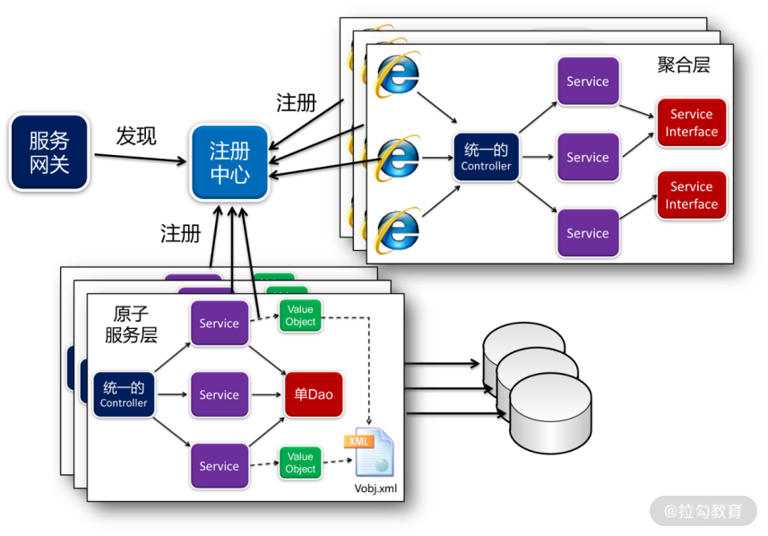
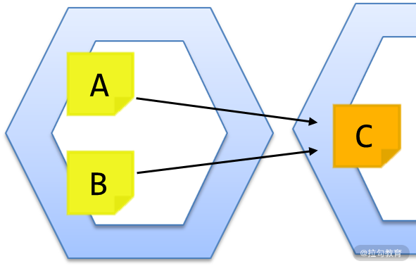
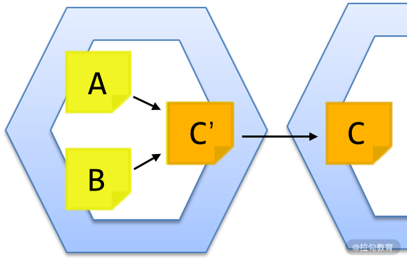

- 00 开篇词 让我们把 DDD 的思想真正落地.md.html
- 01 DDD ：杜绝软件退化的利器.md.html
- 02 以电商支付功能为例演练 DDD.md.html
- 03 DDD 是如何落地到数据库设计的？.md.html
- 04 领域模型是如何指导程序设计的？.md.html
- 05 聚合、仓库与工厂：傻傻分不清楚.md.html
- 06 限界上下文：冲破微服务设计困局的利器.md.html
- 07 在线订餐场景中是如何开事件风暴会议的？.md.html
- 08 DDD 是如何解决微服务拆分难题的？.md.html
- 09 DDD 是如何落地微服务设计实现的？.md.html
- 10 微服务落地的技术实践.md.html
- 11 解决技术改造困局的钥匙：整洁架构.md.html
- 12 如何设计支持快速交付的技术中台战略？.md.html
- 13 如何实现支持快速交付的技术中台设计？.md.html
- 14 如何设计支持 DDD 的技术中台？.md.html
- 15 如何设计支持微服务的技术中台？.md.html
- 16 基于 DDD 的代码设计演示（含 DDD 的技术中台设计）.md.html
- 17 基于 DDD 的微服务设计演示（含支持微服务的 DDD 技术中台设计）.md.html
- 18 基于事件溯源的设计开发.md.html
- 捐赠
15 如何设计支持微服务的技术中台？
有了技术中台对领域驱动的支持，那如何应用于微服务架构呢？支持 DDD 与微服务的技术中台应当具备以下几个方面的能力：
- 解决当前微服务架构的技术不确定性，使得微服务项目可以用更低的成本应对日后技术架构的更迭；
- 可以更加容易地将领域驱动设计应用到微服务架构中，包括：领域建模、限界上下文的微服务拆分、事件通知机制等；
- 需要解决领域对象在仓库与工厂进行装配时，如何将本地查询替换为远程接口调用，实现微服务间数据装配的问题。
解决技术不确定性的问题
如今的微服务架构，基本已经形成了 Spring Cloud 一统天下的局势。然而，在 Spring Cloud 框架下的各种技术组件依然存在诸多不确定性，如：注册中心是否采用 Eureka、服务网关是采用 Zuul 还是 Gateway，等等。同时，服务网格 Service Mesh 方兴未艾，不排除今后所有的微服务都要切换到 Service Mesh 的可能。在这种情况下如何决策微服务的技术架构？代码尽量不要与 Spring Cloud 耦合，才能在将来更容易地切换到 Service Mesh。那么，具体又该如何做到呢？

单 Controller、单 Dao 的设计在微服务架构的应用
如上图所示，当前端通过服务网关访问微服务时，首先要访问聚合层的微服务。这时，在聚合层的微服务中，采用单 Controller 接收前端请求。这样，只有该 Controller 与 MVC 框架耦合，后面所有的 Service 不会耦合，从而实现了业务代码与技术框架的分离。
同样的，当 Service 执行各种操作调用原子服务层的微服务时，不是通过 Ribbon 进行远程调用，而是将原子服务层的微服务开放的接口，在聚合层微服务的本地编写一个 Feign 接口。那么，聚合层微服务在调用原子微服务时，实际调用的是自己本地的接口，再由这个接口通过加载 Feign 注解，去实现远程调用。
这样，聚合层微服务中的各个 Service 就不会与 Spring Cloud 各个组件发生任何耦合，只有那些 Feign 接口与 Spring Cloud 耦合去实现远程调用，让业务代码与技术框架实现了解耦。
同样的道理，原子服务层的微服务在对外开放接口时，不是由各个 Service 直接开放 API 接口。因为如果让 Service 直接开放 API 接口，就需要编写相关注解，使得 Service 与 Spring Cloud 耦合。因此，由统一的 Controller 开放接口，再由它去调用内部的 Service。这样，所有的 Service 就是纯洁的，不与 Spring Cloud 技术框架耦合，只有 Controller 与其耦合。
有了以上这些设计，当未来需要从 Spring Cloud 框架迁移到 Service Mesh 时，只需要将那些纯洁的、不与 Spring Cloud 耦合的 Service，与领域对象中的业务代码迁移到新的框架中，就可以以非常低的成本，在各种技术框架中自由地切换，从而快速跟上技术发展的步伐。通过这种方式，就能很好地应对未来的技术不确定性问题，更好地开展架构演化。
支持微服务远程调用的架构设计
此外，微服务架构设计最大的难题是微服务的合理拆分，拆分要体现单一职责原则，即微服务间低耦合，微服务内高内聚。那么，在软件项目中如何做到这些呢？业界最佳的实践无疑是基于领域的设计，即先按照领域业务建模，然后基于限界上下文进行微服务拆分。这样设计出来的微服务系统，都可以保证每次变更落到某个微服务上。微服务变更完了，自己独立升级，就能达到降低维护成本、快速交付的目的。
基于这样的思路，每个微服务在设计时，都采用支持领域驱动的技术中台。这样，每个微服务都是基于领域驱动建模和设计，然后在该技术中台中编码实现，既提高了开发速度，又降低了维护成本。
然而，转型为微服务后，有一个技术难题亟待解决，那就是跨库的数据操作。当一个单体应用拆分成多个微服务后，不仅应用程序需要拆分，数据库也需要拆分。譬如，经过微服务拆分，订单有订单数据库，用户有用户数据库。这时，当查询订单，需要补填其对应的用户信息时，就不能从自己本地的数据库中查询了，而是调用“用户”微服务的远程接口，在用户数据库中查询，然后返回给“订单”微服务。这时，原有的技术中台就必须做出调整。
如何调整呢？通用 DDD 仓库在执行查询或者装载操作时，查询完订单补填用户信息，不是通过 DAO 去查询本地数据库，而是改成调用远程接口，去调用用户微服务。这时，可以先在订单微服务的本地编写一个用户 Service 的 Feign 接口，订单仓库与工厂调用这个接口就可以了。然后通过 Feign 接口实现对用户微服务的远程调用。
采用 Feign 接口实现远程调用
每个微服务都是一个独立的进程，运行在各自独立的 JVM，甚至不同的物理节点上，通过网络访问。因此，微服务与微服务之间的调用必然是远程调用。以往，我们对微服务间的调用采用 Ribbon 的方式，在程序中的任意一个位置，只要注入一个 restTemplate，就可以进行远程调用。
这样的代码过于随意，会越来越难于阅读与变更维护。比如，原来某个微服务中有两个模块 A 与 B，都需要调用模块 C。随着业务变得越来越复杂，需要进行微服务拆分，将模块 C 拆分到了另外一个微服务中。这时，原来的模块 A 与 B 就不能像原来一样调用模块 C，否则就会报错。

Ribbon 的远程调用方式
如何解决以上问题呢？需要同时改造模块 A 与 B，分别加入 restTemplate 实现远程调用，来调用模块 C。也就是说，这时所有调用模块 C 的程序都需要改造，改造的成本与风险就会比较高。
因此，在实现微服务间调用时，我们通常会采用另外一个方案：Feign。Feign 不是另起炉灶，而是对 Ribbon 的封装，目的是使代码更加规范、变更更加易于维护。采用的方案是，不修改模块 A 与 B 的任何代码，而是在该微服务的本地再制作一个模块 C 的接口 C′。该接口与模块 C 一模一样，拥有模块 C 的所有方法，因此模块 A 与 B 还可以像以前一样在本地调用接口 C′。但接口 C′ 只是一个接口，什么都做不了，因此需要通过添加 Feign 的注解，实现远程调用，去调用模块 C。这个方案，既没有修改模块 A 与 B，又没有修改模块 C，而仅仅添加了一个接口 C′，使维护成本降到了最低。

Feign 的远程调用方式
如何通过 Feign 实现微服务的远程调用呢？
首先，创建项目时，在 POM.xml 文件中添加 Eureka Client、Hystrix 与 Actuator 等组件以外，将 ribbon 改为 feign：
<dependency>
<groupId>org.springframework.cloud</groupId>
<artifactId>spring-cloud-starter-openfeign</artifactId>
</dependency>
<!-- 断路器 hystrix -->
<dependency>
<groupId>org.springframework.cloud</groupId>
<artifactId>spring-cloud-starter-netflix-hystrix</artifactId>
</dependency>
<!-- 断路器监控 -->
<dependency>
<groupId>org.springframework.boot</groupId>
<artifactId>spring-boot-starter-actuator</artifactId>
</dependency>
接着，在启动类 FeignApplication 中，不仅添加 Discovery Client，还要添加 Feign Client：
import org.springframework.boot.SpringApplication;
import org.springframework.boot.autoconfigure.SpringBootApplication;
import org.springframework.cloud.client.discovery.EnableDiscoveryClient;
import org.springframework.cloud.netflix.hystrix.EnableHystrix;
import org.springframework.cloud.openfeign.EnableFeignClients;
/**
* @author fangang
*/
@SpringBootApplication
@EnableDiscoveryClient
@EnableFeignClients
@EnableHystrix
public class FeignApplication {
/**
* @param args
*/
public static void main(String[] args) {
SpringApplication.run(FeignApplication.class, args);
}
}
用 Feign 实现调用时，首先在消费者这端编写一个与生产者开放的 API 一模一样的接口，然后添加 Feign 的注解：
/**
* The service of suppliers.
* @author fangang
*/
@FeignClient(value="service-supplier", fallback=SupplierHystrixImpl.class)
public interface SupplierService {
/**
* @param id
* @return the supplier
*/
@RequestMapping(value = "orm/supplier/loadSupplier", method = RequestMethod.GET)
public Supplier loadSupplier(@RequestParam("id")Long id);
/**
* @param ids
* @return the list of suppliers
*/
@PostMapping("orm/supplier/loadSuppliers")
public List<Supplier> loadSuppliers(@RequestParam("ids")List<Long> ids);
/**
* @return the list of suppliers
*/
@GetMapping("orm/supplier/listOfSuppliers")
public List<Supplier> listOfSuppliers();
}
在这一代码例子中，具体的流程是这样的：
- 在生产者那一端有个 SupplierService 的类，因此首先在消费者这端编写一个一模一样的SupplierService 的接口；
- 接着，在 interface 前面添加注解 @FeignClient；
- 这里的 value 为生产者在 Eureka 注册中心中注册的名称；
- 在每个方法前添加注解，GET 请求就写 @GetMapping，POST 请求就写 @PostMapping，名称就是生产者那端开放的接口名称；
- 然后，如果需要将参数加入 url 中，就在参数前添加注解 @RequestParam；
- 有了以上注解，Feign 就可以从接口中取出相应的数据，拼装成 url，最后去执行 ribbon 实现微服务远程调用。
采用 Ref 标签调用 Feign 接口
采用 Feign 实现微服务间的远程调用以后，在 vObj.xml 中进行建模时，也需要做出改变，将join 标签改为 ref 标签。其配置如下所示：
<?xml version="1.0" encoding="UTF-8"?>
<vobjs>
<vo class="com.demo2.product.entity.Product" tableName="Product">
<property name="id" column="id" isPrimaryKey="true"></property>
<property name="name" column="name"></property>
<property name="price" column="price"></property>
<property name="unit" column="unit"></property>
<property name="classify" column="classify"></property>
<property name="supplier_id" column="supplier_id"></property>
<ref name="supplier" refKey="supplier_id" refType="manyToOne" bean="com.demo2.product.service.SupplierService" method="loadSupplier" listMethod="loadSuppliers"></ref>
</vo>
<vo class="com.demo2.product.entity.Supplier" tableName="Supplier">
<property name="id" column="id" isPrimaryKey="true"></property>
<property name="name" column="name"></property>
</vo>
</vobjs>
在这一配置中，将 supplier 由 join 标签改为 ref 标签，其中：
- bean代表在“产品”微服务本地调用“供应商”微服务的 Feign 接口；
- method是指定要调用这个 Feign 接口的方法；
- 而listMethod是在批量查询“产品”数据集时，进行批量补填的优化措施。
通过这样的配置，在查询产品过程中，通用仓库补填供应商信息，就不会去调用本地的 DAO，而是调用 SupplierService 的 Feign 接口，由它实现对“供应商”微服务的远程调用，从而实现跨微服务的数据装配。
总结
本讲提出了支持 DDD + 微服务架构的技术中台设计思想。通过以上的设计，既实现了业务代码与技术框架解耦的整洁架构思想，使得系统在日后更易于架构演化，又实现了领域模型在微服务间的数据装配，解决了 DDD 转型微服务架构的关键技术难题。开发团队有了这样的技术中台，就能将 DDD 运用起来，在项目中真正的落地实践。
下一讲将在 GitHub 上分享代码，进一步讲解这个技术中台的代码设计与项目实践。
点击 GitHub 链接，查看源码。
© 2019 - 2023 Liangliang Lee. Powered by gin and hexo-theme-book.